完整攻防實戰紀錄——逐步破解 10 個 flag，涵蓋網路掃描、目錄爆破、圖片隱寫、密碼破解、SSH 爆破等完整攻擊鏈，最終成功提權取得 root。
arp-scan 找到靶機 IP，nmap 全 port 掃描取得服務版本與作業系統資訊。
arp-scan -l nmap -A -p- [靶機 IP]
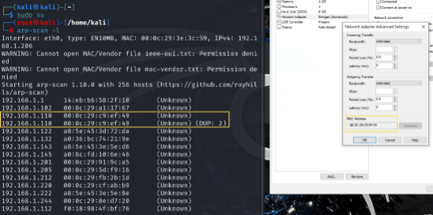
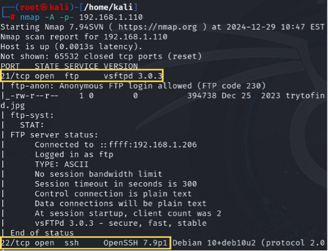
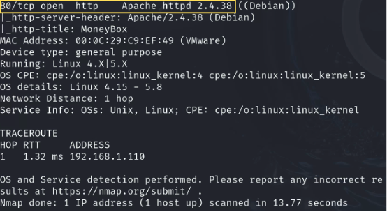
dirsearch 爆破目錄，在 /blogs/ 路徑取得 base64 字串，解碼得到 flag 1 及秘密目錄提示。
dirsearch -u http://[靶機 IP] echo "[base64]" | base64 -d
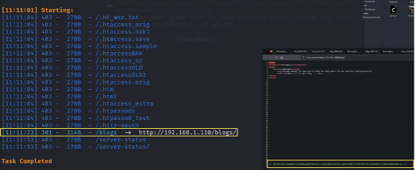
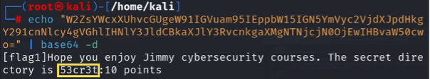
開發者工具找到隱藏的 base64 字串，解碼取得 flag 2。
echo "[base64]" | base64 -d
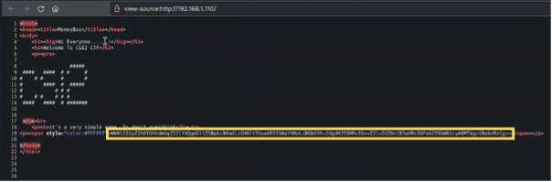
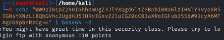
隱藏目錄取得 flag 3，同時拿到 MD5 雜湊作為圖片密碼。FTP 登入下載 trytofind.jpg。
ftp [靶機 IP]
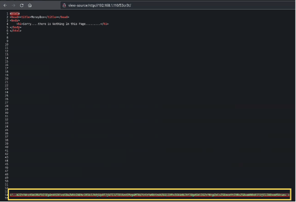
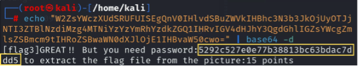
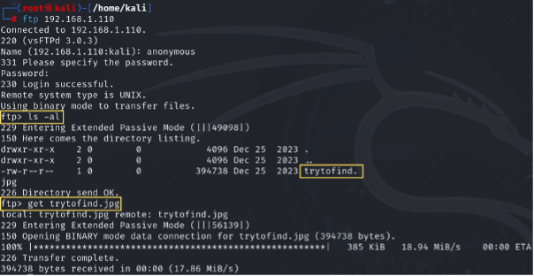
hashbuster 破解 MD5，steghide 提取圖片內藏的 flag 4，並取得下一步帳號提示 renu。
hashbuster steghide extract -sf trytofind.jpg
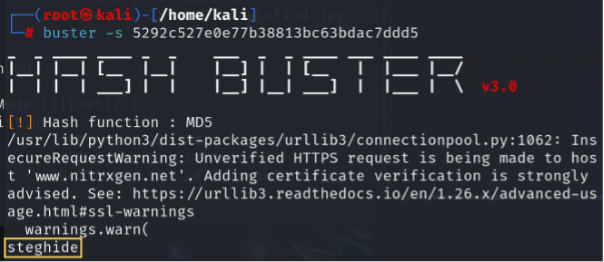
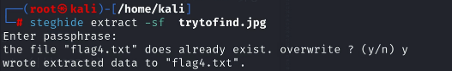
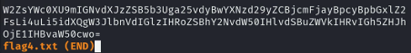
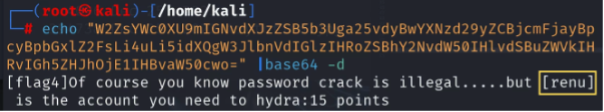
原本用 john 破解 MD5，等了很久都沒有結果。改用 hashbuster 後秒破。工具的選擇比暴力嘗試更重要。
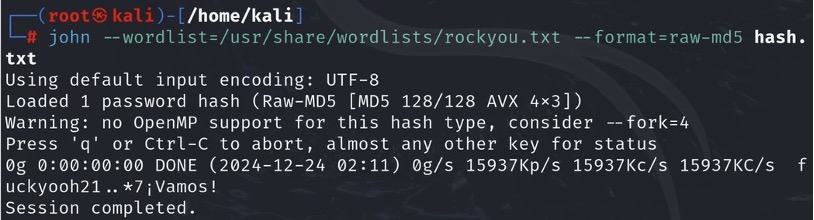
rockyou.txt 切成 14 份同時跑多個 hydra 實例加速爆破，成功取得 renu 的 SSH 密碼並登入取得 flag 5。
split -l 100000 rockyou.txt chunk_ hydra -l renu -P chunk_01.txt ssh://[靶機 IP]
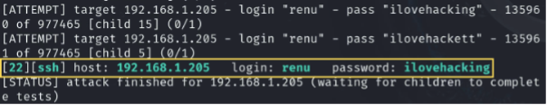
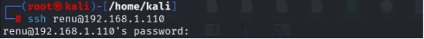
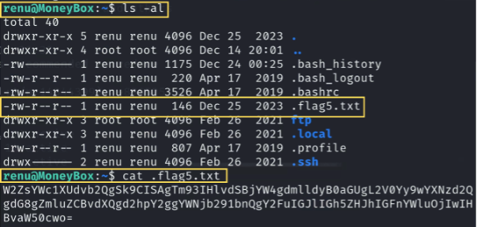
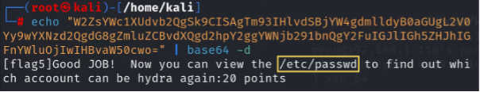
/etc/passwd 中發現 jimmy，以已知密碼登入取得 flag 6。
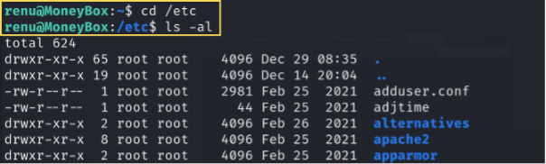
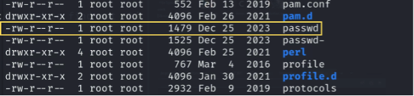
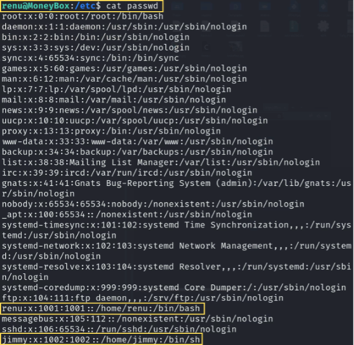
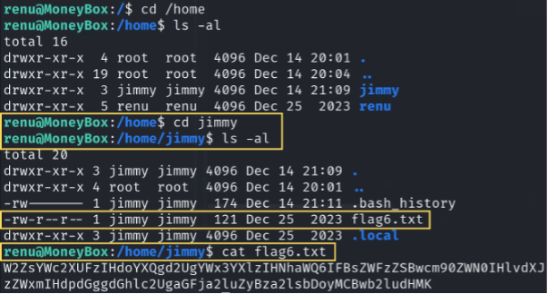
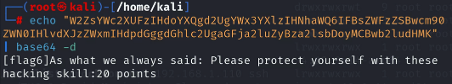
.bash_history 有 hint.txt 的蹤跡。/tmp 找不到，翻根目錄才在 /temp 發現並解碼取得 flag 7。
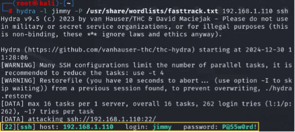
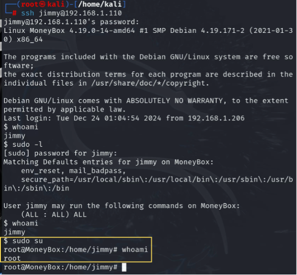
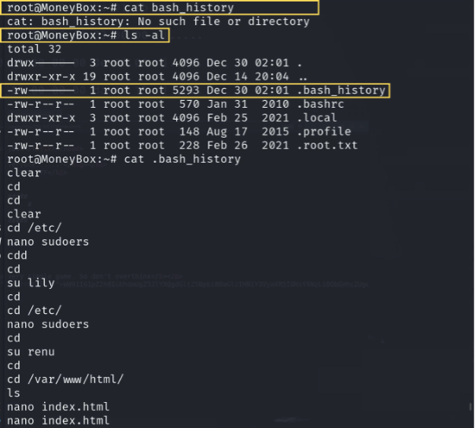
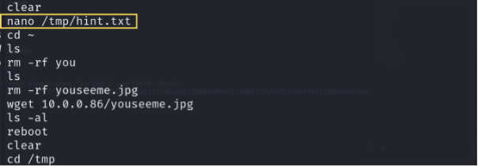
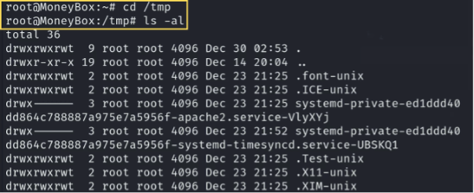
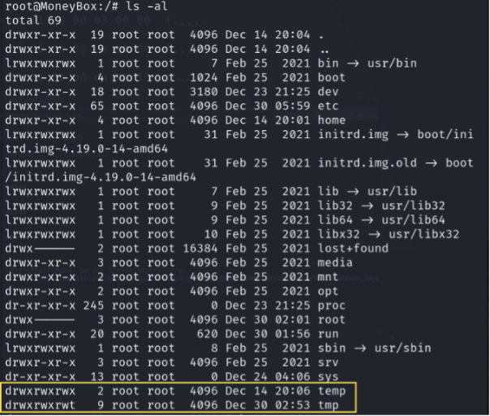
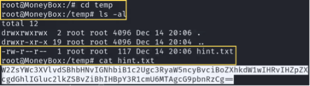
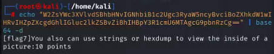
root 目錄的檔案移至 HTTP server，wget 下載後用 strings 掃出隱藏字串並解碼取得 flag 8。
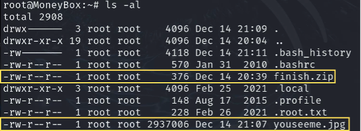
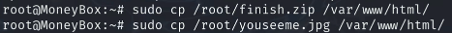
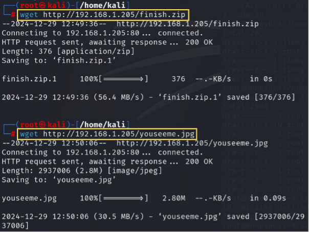
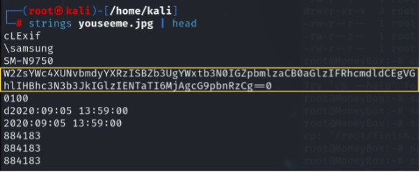
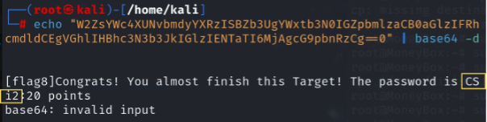
根據提示解開加密 zip 取得 flag 9；binwalk 分析圖檔發現嵌入的未解壓檔案，解壓後取得 flag 10。
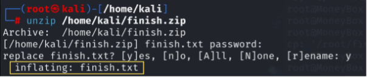
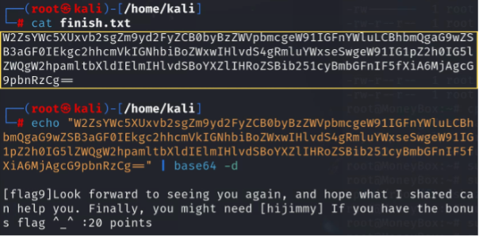
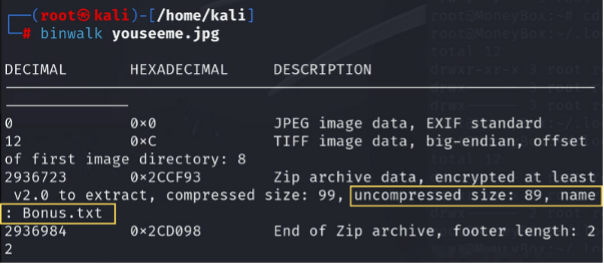
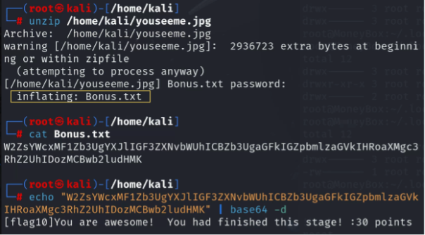
成功進入 root 目錄，讀取 root.txt 取得最終 flag。
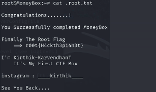